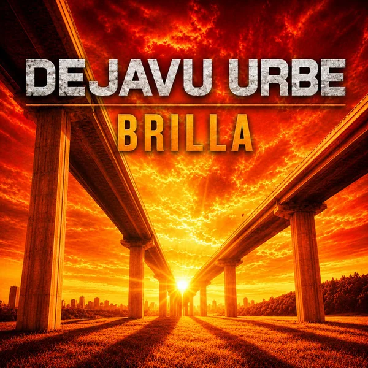

DejavuUrbe · 2026
Brilla
Brilla, canción de DejavuUrbe publicada en 2026. Escuchá el tema y consultá información oficial de la grabación.

La canción
Brilla
Forma parte del repertorio publicado por DejavuUrbe en 2026 y de la etapa actual de la banda.
Los identificadores y enlaces de referencia se mantienen disponibles para documentación, buscadores e información musical.